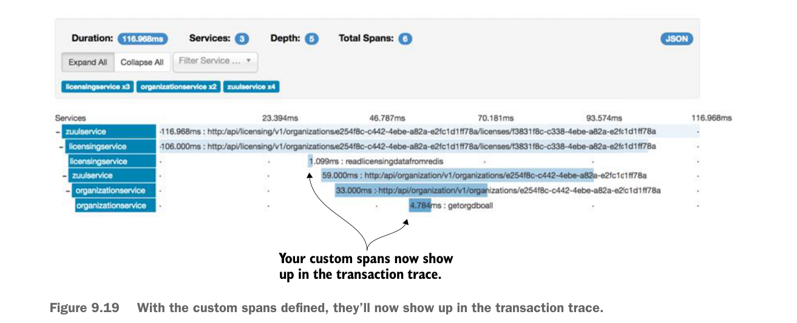

@Autowired
SimpleSourceBean simpleSourceBean;
private static final Logger logger =
➥ LoggerFactory.getLogger(OrganizationService.class);
public Organization getOrg (String organizationId) {
Span newSpan = tracer.createSpan("getOrgDBCall");
logger.debug("In the organizationService.getOrg() call");
try {
return orgRepository.findById(organizationId);
}finally{
newSpan.tag("peer.service", "postgres");
newSpan
.logEvent(
org.springframework.cloud.sleuth.Span.CLIENT_RECV);
tracer.close(newSpan);
}
}
//Removed the code for conciseness
}With these two custom spans in place, restart the services and then hit the GET http://localhost:5555/api/licensing/v1/organizations/e254f8c-c442-4ebe-a82a-e2fc1d1ff78a/licenses/f3831f8c-c338-4ebe-a82a-e2fc1d1ff78a endpoint. If we you look at the transaction in Zipkin, you should see the addition of the two additional spans. Figure 9.19 shows the additional custom spans added when you call the licensing service endpoint to retrieve licensing information.

Your custom spans now show up in the transaction trace.
With the custom spans defined, they’ll now show up in the transaction trace.